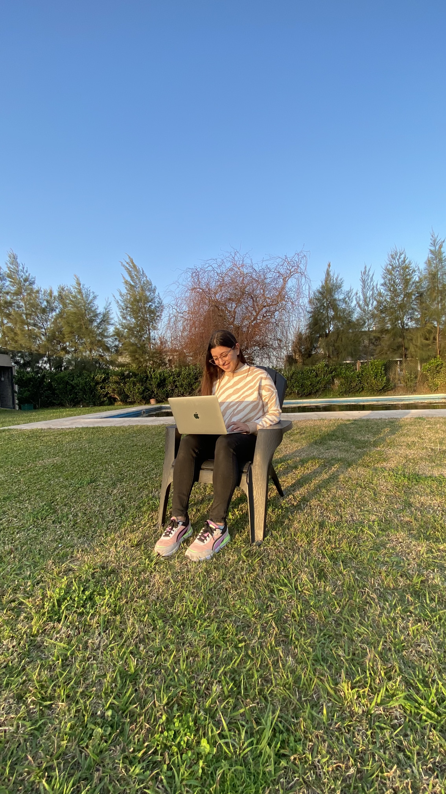

Sobre mí
Titulo 1
¡Bienvenidos a mi rincón del mundo! Aquí estoy, lista para compartir contigo una parte especial de mi vida que me llena de alegría y emoción: mi amor por viajar y vivir nuevas experiencias. Desde que tengo memoria, el deseo de explorar lo desconocido y sumergirme en diferentes culturas ha sido mi brújula interior. Cada viaje es como un capítulo en mi libro personal de aventuras, donde las páginas se llenan con rostros sonrientes, lugares cautivadores y momentos que hacen latir mi corazón con fuerza. La magia de conocer gente nueva y entablar conexiones profundas en cada rincón del mundo es algo que me llena de energía. No importa si estoy perdida en las calles empedradas de una antigua ciudad europea o explorando mercados coloridos en un país lejano, cada encuentro agrega un matiz único a mi historia. Las conversaciones que fluyen en diferentes idiomas, las sonrisas compartidas y las historias compartidas, todo esto enriquece mi alma de maneras inimaginables. Mis viajes no se tratan solo de visitar lugares famosos, sino de sumergirme en la esencia misma de cada destino. Desde probar sabores exóticos hasta aventurarme en actividades locales, busco autenticidad y descubrimiento en cada paso que doy. Cada experiencia me enseña algo nuevo sobre el mundo y sobre mí misma, y estoy ansiosa por llevarlos a lo largo de mis emocionantes travesías mientras navegan por este blog.
Titulo 2
¡Hola de nuevo! Si hay algo que me define aparte de mi amor por las redes sociales, es mi naturaleza proactiva y mi vínculo con el mundo del deporte. Desde que era una niña, los campos de juego y las piscinas han sido mi refugio, un lugar donde la competencia se mezcla con la camaradería y el esfuerzo se convierte en gratificación. Durante mi infancia, el voleibol se convirtió en mi primer amor deportivo. Los gritos de ánimo en la cancha, la sensación de golpear la pelota justo en el punto dulce y el trabajo en equipo necesario para el éxito, todo eso me enseñó lecciones valiosas que llevo conmigo hasta hoy. A medida que crecí, mi interés se diversificó hacia el fútbol y la natación. Cada uno de estos deportes desencadenó una pasión ardiente en mí, impulsándome a superar mis límites y a descubrir nuevas fortalezas. El deporte no solo ha moldeado mi personalidad proactiva, sino que también me ha enseñado la importancia de la disciplina, la dedicación y la perseverancia. No importa si estoy en el campo, en la piscina o en la vida cotidiana, enfrento cada desafío con la misma determinación que aprendí de mis días de juego. A través de este blog, espero transmitir esa energía a ustedes, inspirándolos a abrazar su propia pasión por el deporte y la vida activa. ¡Acompáñenme en este emocionante viaje lleno de deportes y vitalidad!